Precisely stated, a (directed) graph is
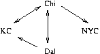can be written precisely as the graph,
N = { KC, Chi, Dal, NYC }
E = { (Dal,KC), (KC,Chi), (Chi,KC), (Chi,Dal), (Dal,Chi), (Chi,NYC)}
Each edge has a source and a target
(In the example,
there is an edge whose source is Chi and whose destination is NYC,
but there is no edge whose source is NYC. It is legal to have
an edge whose source and destination are the same node.)
A path from a node A to node B is a sequence of zero or more edges that start at A, connect together, and end at B. In the example, there is a path from Dal to NYC but there is no path from NYC to Dal.
Notice that a tree is a special form of graph, where one node is called the root, and there is exactly one path from the root to all the other nodes. Unlike a tree, a graph can have multiple paths between nodes, and a graph can have cycles (loops), where a path can go from a starting node to other nodes and back to the starting node again.
Another form of graph is an undirected graph, where every edge from a node A to node B is read also as an edge from B to A. We draw an undirected graph without arrowheads on the edges, like this:
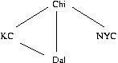
A graph is a weighted graph if some form of label or value (called a ``weight'') is attached to each of its edges. For example, mileages might be attached to the directed graph seen first,
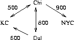The formal representation displays each edge as a triple:
N = { KC, Chi, Dal, NYC }
E = { (Dal,600,KC), (KC,500,Chi), (Chi,500,KC), (Chi,800,Dal), (Dal,800,Chi), (Chi,900,NYC)}
There are two standard ways of storing graphs in a computer: the adjacency matrix and the adjacency list.
An adjacency matrix is a kind of ``mileage table'':
Chi Dal KC NYC
+-----------------
Chi | 0 800 500 900
|
Dal |800 0 600 -1
|
KC |500 -1 0 -1
|
NYC | -1 -1 -1 0
Here, the weights indicate the existence of an edge, and -1 (and 0!)
means there
is no edge.
The adjacency list organizes the graph's edges into sets, based on the edges' sources. Here is the adjacency list for the example:
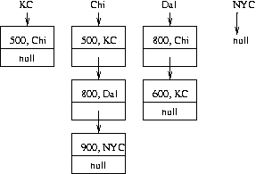
As a rule, use an adjacency matrix to store a graph where there are edges between almost all the nodes; use an adjacency list when the graph has few edges, that is, it is sparse, that is, there are fewer than N * log2 N edges, for a graph with N nodes.
The adjacency matrix and adjacency list are ``raw'' forms of graph and are not oriented towards solving any particular problem. The forms of problems that one must solve are typically:
A spanning tree is a tree that lists all the nodes in a graph but not necessarily all the edges. Its root is the ``entry node'' into the graph. Here are spanning trees that we can generate from the example directed graph where we use Dal as the entry node. For simplicity, we omit the weights on the edges, since spanning trees are normally used to answer questions about the nodes.
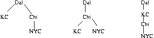and here is a spanning tree for entry node, NYC:
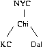Spanning trees are good for answering questions/do processing of the nodes in a graph, where the edges are unimportant to the answer. For example, we can use a spanning tree to answer: Is there a path from one node to another? Is one node connected to all others?
A regular tree is a tree that generates all the paths that can be taken starting from an entry node, where along every path, no node repeats. Here is the regular tree that generates all paths from entry node, KC:
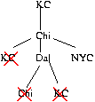The point is, when we reach a node that repeats in a path, it is the same as a backwards arc --- a loop:
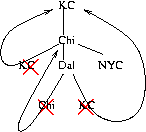Here is the regular tree that generates all paths from entry node, Chi:
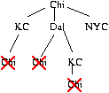Regular trees are built to answer questions/do processing of the paths in a graph, where the edges and weights are important to the answer. For example, we can use a regular tree to answer: list all the paths from one node to another; find the shortest (weighted) path from one node to another.
We now examine two standard and classic graph problems and show how to use the trees to solve them.
A collection of graph nodes is connected if for every node in the collection, there is a path to every other node in the collection. For this (undirected) graph:
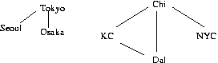There are two connected collections: {Tokyo, Osaka, Seoul} and {KC, Dal, Chi, NYC}.
The collections are disjoint ``sets,'' and such sets play a crucial role in answering questions of the form: ``Is there a path from node A to node B?'' or ``Do A and B belong to the same set?'' To answer the question, we check if A and B are in the same connected collection.
To answer such questions, it is useful to maintain spanning trees that include all the nodes of the graph. For the example, two spanning trees are required, one for each ``set'':
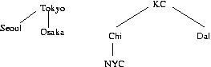Now, to answer the question, ``can we go from A to B?'', we check if nodes A and B have the same root in the spanning tree(s) where they are saved. For example, we can check ``Can we go from Dal to NYC?'' by finding Dal and NYC and confirming that they share the same root, KC.
Another view is that each set is named by the root of its spanning tree --- in the example, we have the Tokyo set and the KC set. Then, the questions just asked are set-membership questions: ``Is Dal in the KC-set''?
The previous checks of ``connectivity'' take time O(log2N), where N is the number of nodes in the graph (assuming that we can locate the source and destination nodes in fixed time, which we can do if we save the addresses of all the spanning-tree nodes in a hash table or spelling tree).
The operation is called a FIND operation. There is also a UNION operation, which corresponds to unioning together two sets:
Say that flights are added between Chi and Osaka, that is, an edge has been added between these two nodes. How can we efficiently combine the spanning trees to reflect the new graph edge?
There is a simple solution to updating the spanning trees: draw a line between Chi's root and Osaka's:
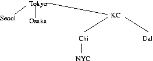This does a ``union'' of the two ``sets'' and is called a UNION operation.
One drawback of the simple definition of UNION is that it can create unbalanced spanning trees --- the above tree is not height-balanced. One way to improve UNION is to link the spanning tree with fewer nodes to the one with more nodes. For the above example, this would cause Tokyo's tree to link to KC's, which gives a slightly better balance.
But we can do better: the FIND operation is often improved so that it rebalances a spanning tree after it finds a path from a node in the spanning tree to its root --- each time a FIND operation is performed, all the nodes traversed on the path to the root are attached directly to the root. For the above example, a FIND operation on NYC would cause both NYC and Chi to be relinked directly to the root, Tokyo:
Tokyo
/ / | \ \
Seoul Osaka KC Chi NYC
|
Dal
A classic question that we might ask is: What is the shortest path (in terms of the weights) from one node to another? For example, what is the shortest path from Dal to NYC?
A naive solution would enumerate all possible paths from Dal to NYC, say by using a stack and depth-first search, starting from ``root node'' Dal. But there is a smarter, faster solution, due to Dijkstra, which constructs a regular tree that enumerates only the ``short'' paths.
The key idea behind Dijkstra's algorithm is: generate a regular tree whose root is the start node; generate all possible paths from the root, but stop a path if either
Here is an example --- say we want the shortest path from Dal to NYC in the graph just seen. We begin with this this array and initial regular tree:
Dal Chi KC NYC
+----+----+----+----+
shortest: | 0| ?| ?| ?|
+----+----+----+----+
The array notes that the shortest path from Dal to Dal is 0; the other distances are undetermined at this time.
The edges from Dal generate this slightly larger regular tree and update the array to read
Dal Chi KC NYC
+----+----+----+----+
shortest: | 0| 800| 600| ?|
+----+----+----+----+
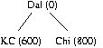Now, we must develop the tree at the nodes KC and Chi. When we try to develop KC, we find an edge that leads to Chi:
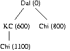But when we calculate the weight of the path from Dal to KC to Chi, we find that it is already larger than the weight already stored in the array as the shortest known weight from Dal to Chi. This means there is no need to develop this path further, and we stop:
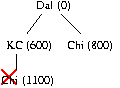
When we develop Chi, we find three edges: the first, to KC is to a node that has been seen before. The array tells us that the path found earlier to KC had weight 600, so the current path, which has weight 800+500 = 1300, is not least and can be terminated. The next edge leads to to Dal and a repeat of a node already seen on this path, so there is no way that this path can be shortest; we terminate this path. The third edge goes from Chi to NYC, and we update the array with our discovery:
Dal Chi KC NYC
+----+----+----+----+
shortest: | 0| 800| 600|1700|
+----+----+----+----+
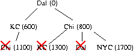The path from Dal to NYC is complete, and we stop this path.
At this point, all paths in the regular tree are completely developed, and we quit --- the shortest path goes from Dal to Chi to NYC.
Finally, we note that, in the previous example, the regular tree itself need not be explicitly constructed in computer storage. Instead, we keep a second array that remembers the edges that yielded the shortest path. Here is the example repeated, with the two arrays, one that remembers the weights and one that remembers the individual edges in the shortest path that we build:
Dal Chi KC NYC
+----+----+----+----+
shortest: | 0| ?| ?| ?|
+----+----+----+----+
Dal Chi KC NYC
+----+----+----+----+
previous:|null| ?| ?| ?|
+----+----+----+----+
After the moves from Dal:
Dal Chi KC NYC
+----+----+----+----+
shortest: | 0| 800| 600| ?|
+----+----+----+----+
Dal Chi KC NYC
+----+----+----+----+
previous: |null| Dal| Dal| ?|
+----+----+----+----+
For city C, previous[C] remembers the immediate
predecessor node
whose edge delivers us to city C on the shortest path.
For example, previous[KC] tells us that the shortest
known path from Dal to KC ends with an edge from Dal to KC, and
shortest[KC] tells us that the weight of the shortest
path from Dal to KC is 600.
After the attempted moves from KC, there are no change to the arrays. The move from Chi to NYC gives the answer and the last edge in the shortest path:
Dal Chi KC NYC
+----+----+----+----+
shortest: | 0| 800| 600|1700|
+----+----+----+----+
Dal Chi KC NYC
+----+----+----+----+
previous: |null| Dal| Dal| Chi|
+----+----+----+----+
Now, we see that the shortest path from Dal to NYC must end with the
edge from previous[NYC] to NYC, that is, from Chi to NYC.
And, we see that the shortest path from Dal to Chi must end with the
edge, previous[Chi] to Chi.
Indeed, we can assemble the path from the edges, listed in reverse: NYC-Chi-Dal (null).